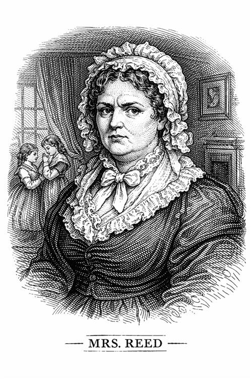

Señora Reed

Es la viuda del tío de Jane, le hicieron prometer que cuidaría de Jane, pero como no le gusta la niña, hace todo lo posible para que su vida sea un calvario. Es la antagonista principal en la infancia de Jane.
Personalidad e impacto en la vida de Jane
Es una mujer fría, inflexible y muy preocupada por las apariencias y el estatus social. Su mayor defecto es su incapacidad para perdonar: odia a Jane porque representa el cariño que su difunto esposo sentía por una "extraña" en lugar de por sus propios hijos.
Es quien encierra a Jane en el Cuarto Rojo, el trauma que marca la psicología de la protagonista para siempre.
Intenta destruir el futuro de Jane incluso antes de que empiece diciéndole al Sr. Brocklehurst que la niña tiene una "tendencia a la mentira", algo que Jane tarda años en desmentir.
Años después, cuando está agonizando, manda llamar a Jane. Pero incluso en su lecho de muerte, no busca redención; confiesa que ocultó la carta del tío de Jane (John Eyre) por puro odio, intentando privar a Jane de su herencia.
Importancia del personaje
Ella es quien provoca que Jane se rebele de pequeña, plantando la semilla de la mujer independiente y fuerte que veremos después.
Su favoritismo ciego hacia sus hijos biológicos (especialmente John) termina siendo la ruina de todos ellos. Al no poner límites a John y alimentar la vanidad de sus hijas, crea una familia rota.
Como acto de justicia poética muere sola, arruinada por las deudas de su hijo y despreciada por sus propias hijas, mientras que la sobrina a la que despreció vuelve para perdonarla y ofrecerle paz.